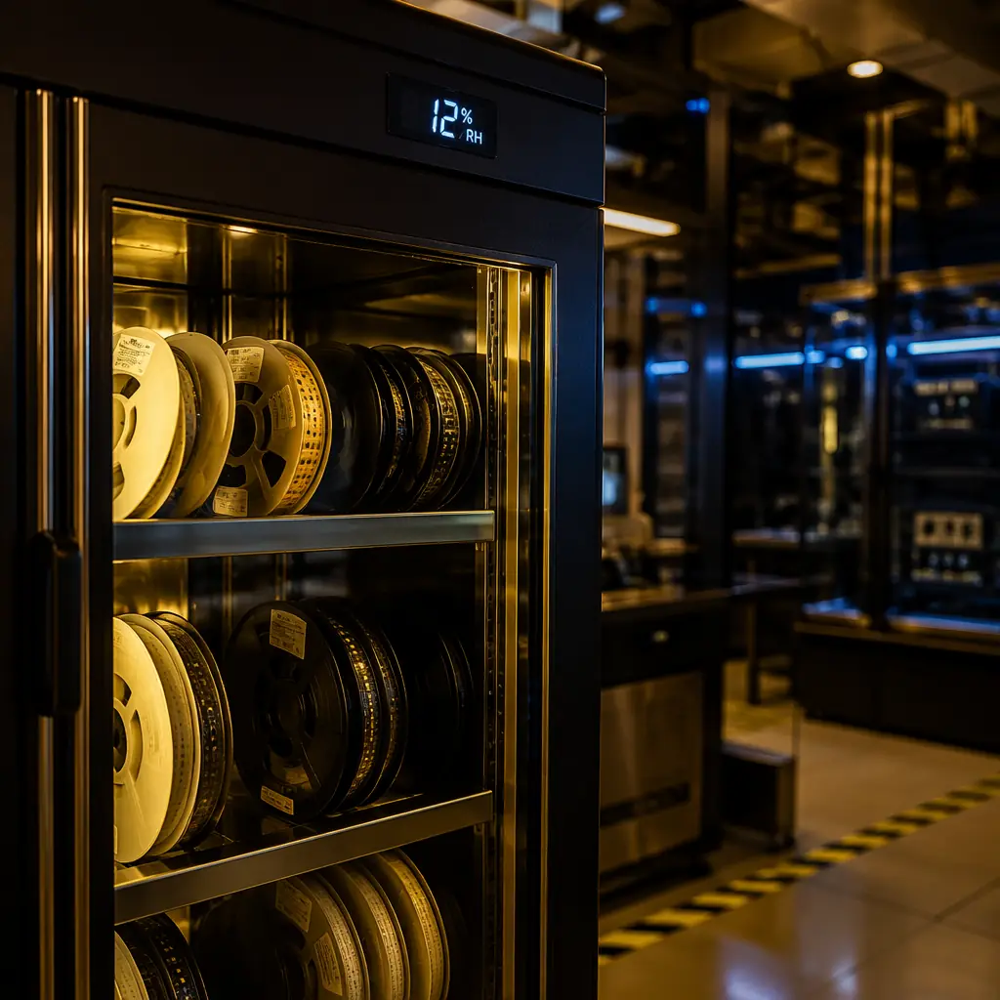
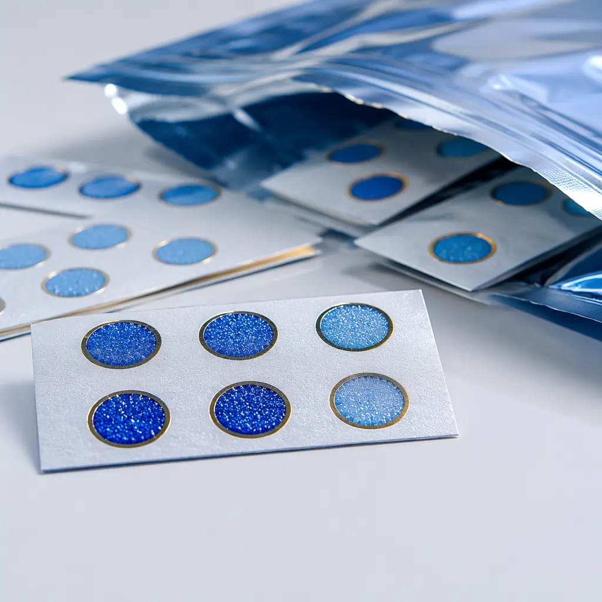
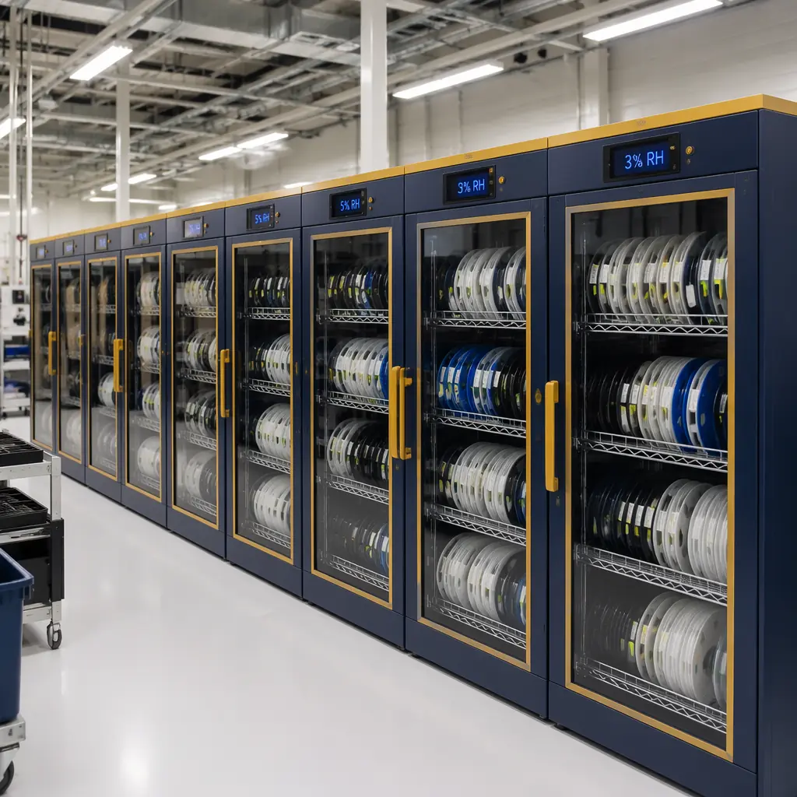

Every year, PCB assembly buyers lose an estimated $120M+ to moisture-induced component failures — BGA packages that delaminate during reflow, QFN devices with internal cracks invisible to AOI, and entire production lots scrapped because someone didn't read the humidity indicator card before opening a moisture-barrier bag. The JEDEC J-STD-020 moisture sensitivity classification system exists to prevent exactly these failures, yet it's one of the most misunderstood specifications in electronics procurement. A buyer who can read an MSL label, calculate remaining floor life, and specify baking requirements correctly saves their company from the single most preventable reflow defect category.
At Huaxing PCBA, our 8 SMT lines process over 8 million solder joints daily across components spanning every MSL level from 1 to 6. Every component reel passes through MSL verification at incoming inspection — floor life tracking begins the moment a moisture-barrier bag is opened, and parts approaching expiry are automatically flagged for baking. This guide translates the JEDEC standard into procurement-language: what MSL means for your Bill of Materials, how to audit your assembly partner's MSL controls, and the exact parameters you should write into your sourcing specifications. For context on how MSL fits into the broader assembly quality picture, see our PCB assembly process guide and our BGA assembly deep-dive.

1. What MSL Actually Means — and Why It Matters at 245°C
Moisture Sensitivity Level (MSL) is a JEDEC standard classification (J-STD-020) that rates how susceptible a surface-mount component is to moisture-induced damage during reflow soldering. The mechanism is straightforward physics: plastic IC packages absorb moisture from ambient air during storage. When that moisture-laden package hits the reflow oven, the water inside vaporizes instantly at temperatures above 217°C. The resulting steam pressure — which can reach 3-5 MPa inside a thin BGA package — generates internal stresses that exceed the fracture toughness of the mold compound, die attach, or lead frame. The result is delamination, wire bond lifting, or the infamous "popcorning" crack that propagates from the die paddle outward through the package body.
MSL Rating Determines Maximum Allowable Factory Floor Exposure
The MSL number (1 through 6) defines the maximum time a component can spend outside its moisture-barrier bag — at a factory environment of ≤30°C and ≤60% RH — before it must be baked dry or it risks reflow damage. For the most common MSL 3 parts, that window is 168 hours (7 days). MSL 2a gives you 4 weeks. MSL 6 mandates mandatory bake before every use. The clock starts the moment the moisture-barrier bag is opened — not when the part is mounted on the PCB.
Package Type and Body Thickness Determine MSL Classification
Thin packages absorb moisture faster and fail more violently. A standard QFP with body thickness 2.0 mm might achieve MSL 2, while the same die in a 0.8 mm TQFP drops to MSL 3. BGAs with large die-to-package ratios — common in FPGAs and processors — are structurally the most vulnerable: the silicon die acts as a rigid plane while the mold compound expands, creating concentrated shear stress at the die edge. For more on BGA-specific assembly challenges including MSL tracking, see our BGA assembly guide.
Reflow Peak Temperature Defines the Stress Threshold
J-STD-020 classifies components based on a peak reflow temperature of 260°C for Pb-free (SnAgCu) processes and 235°C for SnPb eutectic. The classification assumes the component experiences the full peak temperature — if your profile runs cooler (as some thermally sensitive assemblies do), you gain margin. Conversely, a profile exceeding 260°C invalidates the MSL rating entirely, and the component must be treated as MSL 6 until reclassified by the manufacturer. For a full breakdown of reflow profiling decisions, see our step-by-step assembly guide.
2. The Complete MSL Classification Table: Floor Life at a Glance
The JEDEC standard defines six MSL levels plus two sub-levels. Here is the reference table every procurement professional should keep accessible — adapted from J-STD-020E with practical interpretation for buyer-side use:
| MSL | Floor Life | Typical Package Types | Bake Required? | Procurement Impact |
|---|---|---|---|---|
| 1 | Unlimited at ≤30°C/85% RH | Ceramic packages, hermetic devices, some power modules | No | Lowest risk — no special handling needed. These are your least problematic BOM items. |
| 2 | 1 year at ≤30°C/60% RH | Thick SOIC, PDIP, through-hole discretes | No (effectively) | Effectively unlimited in practice — the 1-year window exceeds any realistic factory storage duration. |
| 2a | 4 weeks (672 hrs) | Standard QFP, PLCC, some thin SSOP | After exceeding floor life | The 4-week window is comfortable for most production runs. Standard MSL tracking is sufficient. |
| 3 | 168 hours (7 days) | Thin QFP (≤1.6 mm), most FBGAs, CSPs, many QFNs | After 168 hrs or if HIC shows >20% at 25°C | Most common MSL rating in BOMs. This is the level that demands active tracking — miss this and your production lot is at risk. |
| 4 | 72 hours (3 days) | Very thin TQFP (≤1.0 mm), large die-to-package ratio BGAs | After 72 hrs or HIC >15% at 25°C | Requires disciplined floor-life tracking and likely one bake cycle per production run. Budget for baking. |
| 5 | 48 hours (2 days) | Ultra-thin packages (≤0.8 mm), micro-BGA, WLCSP | After 48 hrs or HIC >10% at 25°C | Production must be tightly scheduled — components should be baked and assembled within the same shift window. |
| 5a | 24 hours | Extreme thin packages, stacked die CSP | After 24 hrs | Requires just-in-time bake-to-assembly workflow. Notify your EMS partner before ordering these parts. |
| 6 | Mandatory bake before use | Extremely moisture-sensitive optoelectronics, MEMS sensors | Always — before every use | Factor bake cost and lead time into every production run. These parts should carry a flag in your ERP system. |
Procurement Reality Check: In a typical BOM for a complex PCB assembly — industrial controller, IoT gateway, automotive ECU — expect 60-70% of the line items to be MSL 3. Another 15-20% will be MSL 2 or better. The remaining 10-15% will be MSL 4, 5, or 6 — and these are the parts that will drive your assembly partner's handling costs and schedule risk. When evaluating PCB assembly quotes, ask specifically how the EMS provider tracks MSL per reel and what their baking charge structure is for MSL 4+ components.

3. Baking Requirements: Temperature, Duration, and the Risk of Oxidation
When a component exceeds its floor life — or when the humidity indicator card inside the moisture-barrier bag indicates exposure above the JEDEC threshold — the remedy is baking: a controlled, elevated-temperature drying process that drives absorbed moisture out of the package before it can vaporize during reflow. But baking is not risk-free. Done incorrectly, it degrades solderability through intermetallic growth at the lead finish, oxidizes the solderable surfaces, and can even warp thin packages through thermal stress. Here is what procurement managers need to specify:
Standard Bake: 125°C for 24 Hours (MSL 3 Packages)
This is the JEDEC J-STD-033B default for MSL 3 components — the most common bake profile in any assembly facility. Components are placed in a calibrated oven at 125°C ±5°C for a full 24 hours. The bake must be performed in a low-humidity environment (<5% RH within the oven chamber). After baking, parts must be assembled within their MSL floor life — the clock resets to zero. Our facility maintains three dedicated bake ovens with continuous RH monitoring for MSL 3/4 component recovery.
Low-Temperature Bake: 40°C for 192 Hours (MSL 4-6 Packages)
For thin packages (body thickness <1.6 mm) and MSL 4-6 components, the standard 125°C bake risks thermal warpage and intermetallic embrittlement at the lead finish. The alternative is a low-temperature extended bake: 40°C at ≤5% RH for 192 hours (8 days). This profile is gentler on the package but requires longer lead time — procurement teams must factor this into production scheduling when MSL 4+ parts arrive with expired floor life. For time-sensitive projects, our quick-turn PCB manufacturing guide covers acceleration strategies.
The Oxidation Risk: Why You Can't Bake Indefinitely
Each bake cycle at 125°C grows the intermetallic compound (IMC) layer at the solderable finish — typically Cu₆Sn₅ for immersion tin and (Ni,Cu)₃Sn₄ for ENIG — by 0.1-0.3 μm. After 3 bake cycles, the IMC thickness can exceed 1.5 μm, at which point solder wetting degrades measurably. J-STD-033B recommends a maximum of 3 cumulative bake cycles for any component. Beyond 3 cycles, the part should be scrapped or re-balled — a cost procurement should factor into MSL management decisions. For details on how finish selection interacts with bake tolerance, see our surface finish comparison guide.
Vacuum Baking: Faster and Gentler (When Available)
Vacuum baking at 60°C for 8 hours under 1-5 Torr achieves equivalent moisture removal to 125°C/24hr without the oxidation penalty. The reduced pressure lowers the boiling point of water, allowing it to evaporate at temperatures well below those that accelerate IMC growth. Vacuum bake ovens are significantly more expensive than convection ovens — not every EMS provider has them — but for MSL 5a/6 components with tight production windows, specifying vacuum bake capability in your supplier qualification process can be the difference between on-time delivery and a week-long delay.
4. How to Read a Humidity Indicator Card (HIC) — the 60% Rule
Every moisture-barrier bag (MBB) from a component manufacturer contains a Humidity Indicator Card (HIC) — a paper card printed with humidity-sensitive chemical spots that change color when exposed to moisture. Reading this card correctly before accepting components into production is the single most important incoming inspection step for MSL-controlled parts, yet it's frequently skipped or misinterpreted. Here's the definitive procurement-side interpretation:
The 60% RH Spot Is Your Go/No-Go Gate
A standard HIC shows spots at 10%, 20%, 30%, and 40% RH (some extended cards go to 60%). The key is the 60% RH indicator — if this spot has changed color (typically from blue to pink for cobalt-chloride cards, or from brown to blue for cobalt-free cards), the bag's internal humidity has exceeded safe limits. At 60% RH, the desiccant inside the MBB is saturated and components have been exposed to moisture above the JEDEC floor-life threshold. These parts must be baked before assembly, regardless of how long the bag has been opened.
Interpreting Multiple Spot Changes
If the 10% spot shows color change but the 20% spot does not: internal RH was between 10-20% — safe for all MSL levels. If the 30% spot changed but 40% did not: internal RH 20-30% — MSL 4/5/5a/6 parts require bake, MSL 2/2a/3 parts remain usable if floor life has not expired. If the 40% spot changed: internal RH exceeded 30% — all MSL 3 and above parts require bake. This graduated interpretation is what separates professional MSL management from the crude "any pink = bake everything" approach that wastes time and bake cycles.
HIC Reading Must Be Documented Per Reel
For any assembly facility with IPC or IATF certification, HIC reading is a traceability requirement — not a suggestion. Each moisture-barrier bag opening must be logged: date, time, operator ID, HIC serial number, the color of each humidity spot, and the resulting MSL reset or bake decision. Our facility's ERP system links HIC data to each component reel's lot code, creating an unbroken chain of custody from bag opening to reflow. This documentation is critical for any buyer conducting a PCB supplier audit — if your assembly partner can't produce HIC logs on request, their MSL controls are not audit-grade.
5. Storage & Handling Infrastructure: What an MSL-Compliant Facility Looks Like
MSL compliance is not a procedure you write into a quality manual — it's infrastructure you build into the factory floor. When you evaluate a PCB assembly partner, or when you set MSL requirements for your own incoming inspection, these are the physical elements that determine whether MSL controls are real or performative:
| Infrastructure Element | Specification | Procurement Audit Question |
|---|---|---|
| Dry Cabinet Storage | ≤5% RH at 25°C, continuous digital logging | "Show me the RH trend log for cabinet #3 from last week." |
| Bake Ovens | 125°C ±5°C, ≤5% RH chamber, N₂ purge option | "What's the ± tolerance on your oven thermocouple calibration?" |
| MBB Re-Sealing | Vacuum sealer with desiccant + fresh HIC per bag | "Do you re-seal with the original manufacturer's desiccant weight?" |
| Floor-Life Tracking | Per-reel timer, ERP-integrated, auto-alert at 80% life | "How does your system handle a partial reel — tracking by remaining hours or full reset?" |
| HIC Documentation | Digital photo + lot-linked record, retained 2 years | "Can I see the HIC log for the last production lot that included MSL 4 BGAs?" |

Factory Reality: The most common MSL failure mode in production is not a missing bake — it's partial-reel tracking. When a single reel of 5,000 MSL 3 chip resistors is opened, 500 are used for a prototype build, and the remaining 4,500 are returned to the dry cabinet, most ERP systems reset the floor-life clock. But the 4,500 remaining parts were exposed to ambient humidity during the time the reel was open. The correct approach: track cumulative exposure time, not a binary "opened/closed" flag. At Huaxing PCBA, every component reel carries an RFID tag that records each bag-opening event and accumulates exposure minutes across multiple production pulls — the system flags bake requirements at 80% of rated floor life, not after expiry. This is the level of granularity an IPC Class 3 or IATF 16949 auditor will expect. For guidance on qualification standards, see our IPC Class 2 vs Class 3 guide.
6. How to Write MSL Requirements into Your Procurement Documentation
The most impactful thing a PCB buyer can do to prevent moisture-related assembly failures is to move MSL from an "EMS partner's problem" to a procurement specification. Here are the four documents where MSL requirements belong — and the exact language to use:
BOM Line Items: Add MSL Rating as a Column
Your Bill of Materials should include an MSL column alongside manufacturer part number and package type. This serves two purposes: it forces your component engineering team to verify MSL during the design phase (catching sensitivity issues before parts are ordered), and it gives your EMS partner the data they need for incoming inspection without having to look up every part number against the manufacturer's datasheet. Format: "MSL 3 — 168 hrs — 125°C/24hr bake if exceeded." For parts where MSL is not specified by the manufacturer, default to MSL 3 treatment unless the package is ceramic or hermetic. See our PCB cost factors guide for how MSL management impacts assembly pricing.
Assembly Specification Document: Define Bake and Track Requirements
Your PCB assembly specification (the document that the EMS partner signs off on before production begins) should include a dedicated MSL section: "Components shall be handled per JEDEC J-STD-033B. MSL 4 and above parts shall be baked within 24 hours of scheduled placement. Floor-life tracking per reel, with HIC card reading logged at every moisture-barrier bag opening. Cumulative bake cycles per component shall not exceed 3. Partial-reel exposure time shall be accumulated, not reset, across multiple production pulls." This paragraph — 4 sentences — covers 90% of the MSL failures that occur in contract manufacturing.
Supplier Quality Agreement: Bake Cost Allocation
Who pays for baking when components arrive with expired floor life? If the buyer supplies consigned parts, the answer should be in the quality agreement: components arriving with broken MBB seals, missing HIC cards, or expired date codes are the buyer's responsibility. Components that exceed floor life due to the EMS partner's scheduling delays are the EMS partner's responsibility. A clear cost allocation prevents the most common MSL-related dispute in outsourced assembly — and incentivizes both parties to maintain proper handling.
Incoming Inspection Checklist: MSL Verification Row
Your incoming inspection procedure — whether performed at your facility or the EMS partner's — should include a line item: "MSL verified per BOM. HIC card read and logged for each MBB. Floor-life clock started in ERP. Non-conformance: quarantine parts, notify procurement." If this row does not exist in your incoming inspection checklist, MSL verification is not happening systematically — it's happening when someone remembers. For a complete incoming inspection framework, see our supplier audit checklist.
The Bottom Line: MSL Is a Procurement Specification, Not a Manufacturing Afterthought
Moisture sensitivity management is one of the highest-ROI investments a PCB buyer can make in assembly quality — and it costs almost nothing beyond disciplined documentation. The difference between a BOM where MSL is an afterthought and a BOM where every line item carries an MSL rating with bake instructions is, on average, 2-5% reduction in reflow-related defect rates. On a production run of 10,000 boards with 200 components each, that's 40,000-100,000 solder joints that don't fail — and zero field returns from moisture-induced delamination that passed electrical test but cracked during thermal cycling in the end application.
At Huaxing PCBA, MSL controls are built into our incoming inspection, ERP, and production scheduling systems — not bolted on as a quality-manual checkbox. Every component reel is RFID-tracked for cumulative moisture exposure. HIC cards are photographed, logged, and linked to lot codes. Bake ovens run continuous RH monitoring with N₂ purge. For MSL 4-6 components, our production scheduling system automatically gates placement to within 24 hours of bake completion. If you're sourcing PCB assembly and want to verify that your partner's MSL controls are production-grade — not just audit-grade — send us your BOM. Our engineering team provides a free DFM review including MSL risk assessment within 24 hours.